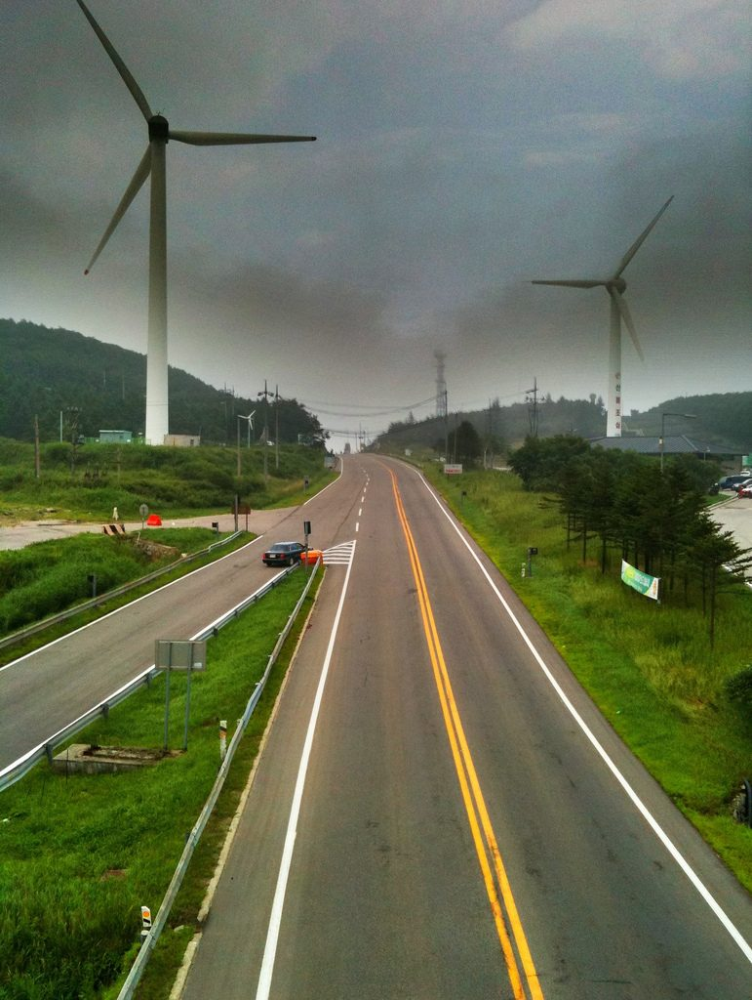

평창군, 21MW 운두령풍력 주민참여형으로 추진…28일 군·발전사·한국남동발전·주민대표 업무협약 예정

태백 가덕산 풍력단지 개발 방식 적용 계획…사업 초기부터 주민대표와 정보 공유, 발전 수익 지역 환원 방안 마련 방침, 주민 지분율·수익 규모는 아직 안 나와
강원 평창군이 21MW 규모 운두령풍력 발전사업을 주민이 참여하는 공공주도형으로 추진한다. 군은 28일 군수 집무실에서 운두령풍력, 하누리파워, 한국남동발전, 주민대표와 함께 사업 추진과 지역사회 이익 공유, 주민 참여 확대를 위한 업무협약을 맺을 예정이다. 사업에는 주민참여형 풍력 사례로 꼽히는 태백 가덕산 풍력발전단지의 개발 방식을 적용할 계획이며, 참여 기관들이 사업 초기부터 주민대표와 협력체계를 꾸려 추진 과정과 정보를 나누고 발전 수익을 지역사회에 돌려주는 방안을 마련한다는 것이 군의 설명이다. 다만 주민 지분율과 투자 방식, 수익 환원 규모, 정확한 부지와 착공 시기는 아직 공개되지 않았다. 군은 이번 사업을 바탕으로 신재생에너지 공급의무화제도(RPS)에 대응하면서 지역 안 공공주도형 육상풍력 개발을 단계적으로 넓히는 방안도 검토하고 있다. 심재국 평창군수는 주민과 지자체, 기업이 함께하는 "상생형 에너지 사업"으로 추진해 공공주도형 풍력의 기반을 마련하겠다고 밝혔다.
시민에너지 관점
주민참여형이라는 이름이 붙어도 주민이 얼마를 출자해 얼마를 가져가는지 정해지지 않으면 이익 공유는 약속에 머문다. 독일 메클렌부르크포어포메른주는 2016년 시민·지자체 참여법을 만들어, 새 풍력단지 사업자가 가까운 주민과 지자체에 사업회사 지분을 살 기회를 반드시 내놓도록 했다. 참여 조건을 미리 못 박으면 사업이 늦어진다는 우려가 있지만, 조건이 처음부터 분명해야 뒤늦은 반대로 사업이 멈추는 일을 줄이고, 주민이 지분을 가진 주인이 될 때 바람이 만든 수익이 마을에 남아 다음 단지를 받아들일 신뢰도 쌓인다. 28일 협약과 그 뒤 사업 계획에는 주민 지분율과 출자 방식, 수익 환원 규모를 숫자로 담고, 군이 넓히려는 공공주도 육상풍력 전체에 같은 기준을 적용해야 한다.
출처: 연합뉴스 2026-10-27 임보연 원문 보기
平昌郡、21MWの雲頭嶺風力を住民参加型で推進…28日に郡・発電事業者・韓国南東発電・住民代表が業務協約を結ぶ予定
太白・加徳山風力団地の開発方式を適用する計画…事業初期から住民代表と情報を共有し、発電収益を地域に還元する方策を用意する方針、住民の持分比率・収益規模はまだ示されず
江原道平昌郡は、21MW規模の雲頭嶺（ウンドゥリョン）風力発電事業を、住民が参加する公共主導型で進める。郡は28日、郡守執務室で雲頭嶺風力、ハヌリパワー、韓国南東発電、住民代表とともに、事業の推進と地域社会との利益共有、住民参加の拡大に向けた業務協約を結ぶ予定だ。事業には住民参加型風力の事例とされる太白（テベク）・加徳山（カドクサン）風力発電団地の開発方式を適用する計画で、参加機関が事業の初期段階から住民代表と協力体制をつくって推進過程や情報を共有し、発電収益を地域社会に還元する方策を用意するというのが郡の説明だ。ただし、住民の持分比率や投資方式、収益還元の規模、正確な用地と着工時期はまだ明らかにされていない。郡はこの事業をもとに、再生可能エネルギー供給義務化制度（RPS）に対応しながら、域内の公共主導型陸上風力の開発を段階的に広げる案も検討している。シム・ジェグク平昌郡守は、住民と自治体、企業がともに取り組む「共生型エネルギー事業」として進め、公共主導型風力の基盤を整えると述べた。
市民エネルギーの視点
住民参加型という名前が付いていても、住民がいくら出資していくら受け取るのかが決まらなければ、利益共有は約束にとどまる。ドイツ・メクレンブルク＝フォアポンメルン州は2016年に市民・自治体参加法を定め、新しい風力発電所の事業者に、近隣の住民と自治体へ事業会社の持分を買う機会を必ず提供させるようにした。参加条件をあらかじめ決めると事業が遅れるという懸念もあるが、条件が最初から明確であってこそ後からの反対で事業が止まる事態を減らせ、住民が持分を持つ主体になれば風が生んだ収益が地域に残り、次の団地を受け入れる信頼も積み上がる。28日の協約とその後の事業計画には住民の持分比率と出資方式、収益還元の規模を数字で盛り込み、郡が広げようとする公共主導の陸上風力全体に同じ基準を適用すべきだ。
出典: 聯合ニュース（Yonhap News Agency） 2026-10-27 イム・ボヨン 原文を読む
平昌郡以居民参与型推进21MW云头岭风电…28日郡政府、开发企业、韩国南东发电与居民代表拟签业务协议
计划沿用太白加德山风电场开发模式…从项目初期起与居民代表共享信息，拟制定发电收益回馈地方方案，居民持股比例和收益规模尚未公布
韩国江原道平昌郡将以居民参与的公共主导模式推进21MW规模的云头岭风电项目。郡政府计划于28日在郡守办公室与云头岭风电、Hanuri Power、韩国南东发电及居民代表签署业务协议，内容涉及项目推进、与地方社会共享利益和扩大居民参与。项目计划采用被视为居民参与型风电案例的太白加德山风电场开发模式；据郡政府介绍，参与机构将从项目初期起与居民代表建立合作机制，共享推进过程和信息，并制定把发电收益回馈地方社会的方案。不过，居民持股比例、投资方式、收益回馈规模以及确切选址和开工时间尚未公布。郡政府还在研究以此为基础，在应对可再生能源配额制（RPS）的同时，分阶段扩大辖区内公共主导型陆上风电开发。平昌郡守Shim Jae-guk表示，将把项目作为居民、地方政府和企业共同参与的"共赢型能源项目"来推进，为公共主导型风电打下基础。
市民能源视角
即便冠以"居民参与型"之名，如果不确定居民出资多少、能拿回多少，利益共享就只停留在承诺上。德国梅克伦堡-前波美拉尼亚州在2016年制定《公民与市镇参与法》，要求新建风电场的开发商必须向附近居民和市镇提供购买项目公司股份的机会。有人担心事先锁定参与条件会拖慢项目，但只有条件从一开始就清楚，才能减少因事后反对而停工的情况；居民成为持股的主人，风带来的收益才会留在当地，接纳下一个风电场的信任也才能积累起来。28日的协议及其后的项目计划应以数字写明居民持股比例、出资方式和收益回馈规模，郡政府还应把同一标准适用于其计划扩大的全部公共主导陆上风电项目。
来源: 韩联社（Yonhap News Agency） 2026-10-27 Lim Bo-yeon 查看原文
Pyeongchang to develop 21MW Undu-ryeong wind project with resident participation; county, developers, Korea South-East Power and residents' representative to sign agreement on Oct. 28
County plans to follow the Gadeoksan wind farm model in Taebaek, share information with residents from the start and work out a way to return generation profits to the community; residents' stake and profit share not yet disclosed
Pyeongchang County in Gangwon Province will pursue the 21MW Undu-ryeong wind power project as a publicly led development with resident participation. On Oct. 28 the county plans to sign a memorandum of understanding in the county governor's office with Undu-ryeong Wind, Hanuri Power, Korea South-East Power and a residents' representative to move the project forward, share benefits with the local community and widen resident participation. The project is to follow the development model of the Gadeoksan wind farm in Taebaek, regarded as a resident-participation wind case, and according to the county the participants will set up a cooperation framework with the residents' representative from the early stages, share information on the process and prepare a way to return generation profits to the community. The residents' equity share, investment method, size of the profit return, exact site and construction schedule have not been disclosed. Building on the project, the county is also considering gradually expanding publicly led onshore wind development in the area while responding to the Renewable Portfolio Standard (RPS). Pyeongchang County Governor Shim Jae-guk said the county would pursue it as a "win-win energy project" involving residents, local government and business to lay the groundwork for publicly led wind power.
Citizen Energy View
A project can carry the label "resident participation," but unless it is settled how much residents invest and how much they get back, benefit sharing remains a promise. The German state of Mecklenburg-Western Pomerania passed a citizens' and municipalities' participation law in 2016 requiring developers of new wind farms to offer nearby residents and municipalities the chance to buy shares in the project company. Some worry that fixing participation terms in advance slows projects down, but clear terms from the start reduce the risk of late opposition halting a project, and when residents become shareholding owners the income from the wind stays local and builds the trust needed to accept the next wind farm. The Oct. 28 agreement and the project plans that follow should spell out in numbers the residents' equity share, how they invest and how much profit is returned, and the county should apply the same standard to all the publicly led onshore wind it intends to expand.
Source: Yonhap News Agency 2026-10-27 Lim Bo-yeon Read the original